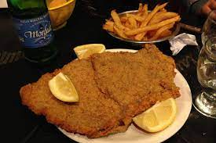

Milanesa

These is a typical argentinian dish, which is made with a beef full covered with bread crumbs
argentinian people usually like to frie it and eat it with french fries.
Ingredients:
- 1kg Pork beef
- 1/2 bread crumbs
- 6 Eggs
- Garlic
- Salt
- Pepper
- Oregano
Steps:
- We have to slice the beef with a size we like, but it is better if it is as slim as possible
- We have to put the slices into the beaten egg, which contains garlic, salt, pepper and oregano
- we have to put the slices with beatean egg into the bread crumbs until it's full covered